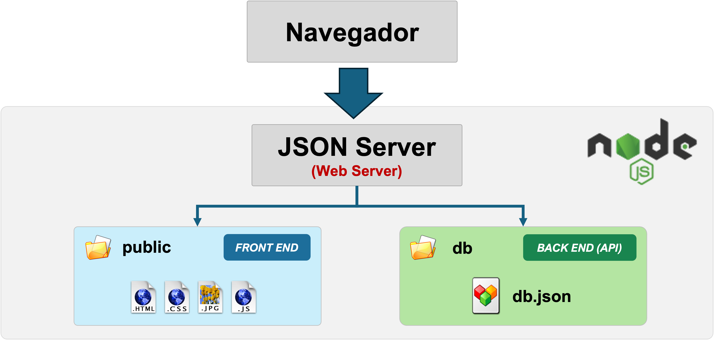
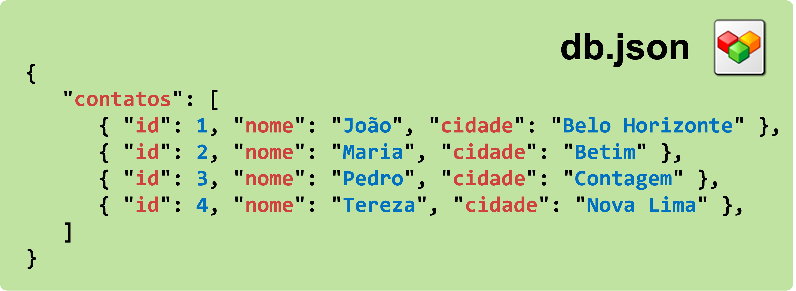

Boas vindas
Sejam bem-vindos à home-page do projeto de TI 1 - Trabalho Interdisciplinar
Esse conteúdo que você está lendo foi criado para exemplificar como criar o seu site integrado com o ambiente de login e o back end que utiliza o JSON Server.
Ao criar o seu site, você deve adaptar esse código para sua neessidade ou começar do zero, excluindo todo esse conteúdo.
Arquivos do site (Front End)
Para montar seu site, edite os arquivos existentes e crie novos arquivos na pasta public que mantem todos os arquivos da parte de Front End do site, a interface que é vista pelo usuário no navegador.
Nesta pasta public, sugerimos que você organize os arquivos do seu site da seguinte maneira:
- Pasta
assets: os arquivos de formatação (CSS), os scripts (JS), as imagens utilizadas no site (JPG, PNG, GIF, SVG, etc), fontes (TTF) e outros arquivos gerais utilizados por todo o site. - Pasta
modulos: os arquivos utilizados na implementação das funcionalidades do site. Separe uma sub-pasta para cada novo módulo ou funcionalidade. Pode também ser utilizado para dividir o trabalho de cada membro do grupo. - Arquivo
index.html: arquivo que representa a "home page" do site.
Módulo de Login
O módulo de login de usuário traz uma funcionalidade completa de registro de usuários e validação de login e senha.
Integração do site com módulo de Login
Para utilizar o módulo de login, basta incluir o script na sua página colocando a seguinte tag no HEAD
<script src="./assets/js/login.js"><script>
Ao incluir o script de login na sua página, caso o usuário ainda não tenha efetuado login, ao acessar a home-page do site, o navegador será direcionado para o formulário de Identificação de Usuário. Se o usuário informar corretamente o login e a senha, o navegador será direcionado para a Home-Page.
Sessão do usuário logado
Assim que o usuário se identifica e acessa a parte privada do site, o módulo de login cria uma chave do sessionStorage do navegador com o título usuarioCorrente e cujo conteúdo é um objeto com os atributos: id, nome, login, senha e email.
Base de dados de usuários
Inicialmente o módulo de login é configurado com dois usuários:
- admin - Senha: 123
- user - Senha: 123
Servidor Web e API baseada no JSON Server (Back end)
O ambiente de trabalho disponibilizado para suportar o Trabalho Interdisciplinar 1 é baseado no Node.js. A aplicação de back end utiliza o módulo JSON Server para criar um Servidor Web que prove duas estruturas separadas:
- Arquivos estáticos (Pasta
public): da acesso aos arquivos utilizados no front end (HTML, CSS e JavaScript). - API RESTful (pasta
db): uma interface para acesso aos dados definidos no arquivo db.json.
Arquitetura do site
A imagem que se segue apresenta a arquitetura desse ambiente, mostrando as duas refletindo as pastas desse ambiente.

Arquivo db.json
O arquivo JSON utilizado para definição das estruturas dos dados providos pela aplicação é localizado na pasta db e tem um formato como o mostrado no exemplo da figura a seguir. Esse arquivo define uma estrutura hipotética de contatos que descreve itens com os seguintes atributos: id, nome e cidade. para o JSON Server, é fundamental que toda estrutura tenha um atributo de identificador de nome id.
